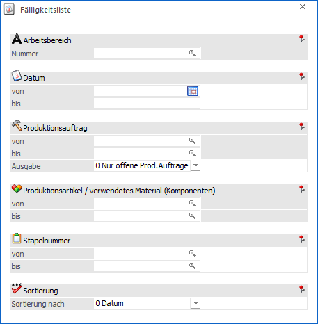
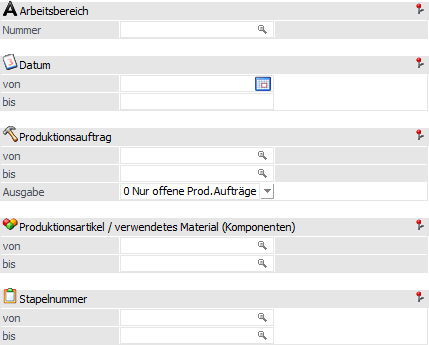
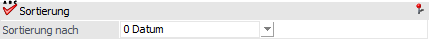

Im Menüpunkt
1 WinLine PPS
1 Auswertungen
1 Fälligkeitsliste
kann ausgewertet werden, wann welcher Produktionsauftrag fällig ist, zu welchem Zeitpunkt die verschiedenen Arbeitsschritte zu erledigen wären und wann welches Material (Komponenten) benötigt wird.
Hinweis
Die Auswertung kann auch für bereits erledigt Produktionsaufträge durchgeführt werden, d.h. es kann ausgewertet werden, zu welchem Zeitpunkt ein bestimmter Auftrag / die Arbeitsschritte / das Material fällig war.

Die Ausgabe kann durch folgende Kriterien eingeschränkt bzw. beeinflusst werden:
Selektion

Ø Arbeitsbereich
An dieser Stelle kann die Auswahl des Arbeitsbereichs erfolgen. Mit Hilfe von Arbeitsbereichen können diverse Einschränkungen, wie z.B. der Produktionsartikel oder der Stapelnummer, bereits vorbelegt werden. Die Anlage des Arbeitsbereichs erfolgt in den Stammdaten (WinLine PPS - Stammdaten - Arbeitsbereiche).
Ø Datum von / bis
Hier kann eine Einschränkung auf das Fälligkeitsdatum erfolgen. Es werden nur jene Produktionsaufträge / Arbeitsschritte / Materialien (Komponenten) angezeigt, deren Fälligkeitsdatum innerhalb der eingegebenen Zeitspanne liegt.
Ø Produktionsauftrag von / bis
An dieser Stelle kann eine Einschränkung auf die Produktionsaufträge erfolgen, welche in der weiteren Folge ausgewertet werden sollen.
Ø Ausgabe
Mit Hilfe dieser Auswahlliste kann definiert werden, welche Art von Produktionsaufträgen ausgegeben werden sollen. Folgenden Auswahlmöglichkeiten stehen hierfür zur Verfügung:
ü 0 - Nur offene Prod.Aufträge
Es
werden nur die noch nicht abgeschlossenen Produktionsaufträge ausgegeben.
Hinweis
Wenn innerhalb eines Produktionsauftrags bereits ein oder mehrere Arbeitsschritte abgeschlossen wurden, dann wird das Material für diese Arbeitsschritte nicht mit angezeigt. Bei solchen Arbeitsschritten (d.h. den Halbfertigprodukten) anstelle dessen die Information "für Produktion (derzeit auf Lager)" angezeigt.
ü 1 - inkl. erledigter
Prod.Aufträge'
Es werden alle Produktionsaufträge (abgeschlossene und offene)
ausgegeben.
ü 2 - NUR erledigte
Prod.Aufträge
Es werden nur die bereits abgeschlossenen Produktionsaufträge
ausgegeben.
Hinweis
Wenn innerhalb eines Auftrags bereits ein oder mehrere Arbeitsschritte abgeschlossen wurden, dann werden diese Arbeitsschritte auch mit angezeigt.
Ø Produktionsartikel / verwendetes Material (Komponenten) von / bis
An dieser Stelle kann eine Einschränkung auf die auszuwertenden Artikel (Produktionsartikel, Halbfertigprodukte, Komponenten) erfolgen.
Hinweis
Wird im Feld "Produktionsartikel / verwendetes Material (Komponenten) von / bis" z.B. nur eine Artikelnummer eingegeben und dieser Artikel hat auch noch Ausprägungen, so werden alle Ausprägungen automatisch mit angedruckt. Nur wenn während des Anklickens des entsprechenden "Ausgabe"-Buttons die STRG-Taste gedrückt wird, wird nur der Hauptartikel alleine ausgewertet.
Ø Stapelnummer von / bis
In diesen Feldern kann nach den Stapelnummern eingeschränkt werden, welche in der Fälligkeitsliste berücksichtigt werden sollen.
Sortierung

Ø Sortierung nach
Hier kann entschieden werden nach welchem Kriterium die Fälligkeitsliste sortiert werden soll. Folgende Möglichkeiten stehen zur Verfügung:
ü 0 - Datum
ü 1 - Auftrag
ü 2 - Artikel
ü 3 - Stapelnummer
Buttons

Ø Ausgabe Bildschirm
Mit Hilfe des Buttons "Ausgabe Bildschirm" oder der Taste F5 wird die Fälligkeitsliste am Bildschirm ausgegeben.
Ø Ausgabe Drucker
Durch Anwahl des Buttons "Ausgabe Drucker" wird die Fälligkeitsliste am Drucker ausgegeben.
Ø Ende
Durch Anwahl des Buttons "Ende" bzw. der Taste ESC wird das Fenster geschlossen.